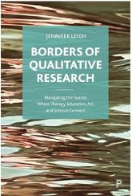
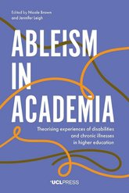
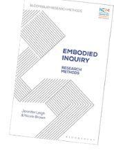

Books
- Borders of qualitative research: Navigating the spaces where therapy, education, art, and science connect (2023, Policy Press)
- Women in Supramolecular Chemistry: Collectively crafting the rhythms of our work and lives in STEM (2022, Policy Press)
- Embodied Inquiry: Research Methods (2021, Bloomsbury)
- Ableism in Academia: Theorising disabilities and chronic illnesses in higher education (2020, UCL Press)
- Conversations on embodiment across higher education: Teaching, practice, and research (2019, Routledge)
Book Chapters
- Mobile Visual Bodies (Moving Seeing Bodies) in Bloomsbury Encyclopedia of Visual Culture Vol.2 (In press) [link]
- Creative data analysis in science Leigh, J., Hiscock, J., Koops, S., McConnell, A., Haynes, C., Caltagirone, C., Kieffer, M., Draper, E., Slater, A., Hutchins, K., Watkins, D., Busschaert, N., von Krbek, L., Hind, C. in Handbook of creative data analysis, Kara, H., Thompson, P. (Eds) (In press, Policy Press) [link]
- Can science be inclusive? Belonging and identity when you are disabled, chronically ill, or neurodivergent. Leigh, J., Sarju, J., Slater, A. in Belonging and identity in STEM Higher Education, Howsen, K., Kingsbury, M. (Eds) (2024, UCL Press)
- WISC — narratives of resilience and community building in a gender constrained field Leigh, J., Hiscock, J., McConnell, A., Haynes, C., Kieffer, M., Caltagirone, C., Hutchins, K., Watkins, D., Slater, A., von Krbek, L., Draper, E., Busschaert, N. in Academic Women, Voicing Narratives of Gendered Experiences, Ronksley-Pavia, M., Neumann, M., Manakil, J., Pickard-Smith, K (Eds) (2023, Bloomsbury)
- Jennifer Leigh in ResearcHer, Kelly Pickard-Smith & WIASN (Eds) (2023, Emerald)
- Using photo diaries as an inclusive method to explore information experiences in Higher Education Watson, B., Leigh, J. in Exploring Diary Methods in Higher Education Research: Opportunities, Choices and Challenges, Henderson, E., Cao, X. (Eds) (2021, Routledge)
- Teaching with and supporting teachers with dyslexia in higher education Hiscock, J., Leigh, J. in Negotiating ableism in Higher Education, N. Brown (Ed) (2021, Policy Press) [link]
- Embodiment and Authenticity: How embodied research might shed light on experiences of disability and chronic illness Leigh, J. in Lived Experiences of Ableism in Academia: Strategies for Inclusion in Higher Education (2021, Policy Press)
- What would a rhythmanalysis of a qualitative researcher's life look like? Leigh, J. in Temporality in Qualitative Inquiry, Clift, B. et al (Eds) (2021, Routledge)
- An embodied approach to a cognitive discipline Leigh, J. in Time and Space in the Neoliberal University, M. Breeze, Y. Taylor & S. Costa (Eds) (2019, Palgrave Macmillan)
- Embodied practice and embodied identity Leigh, J. (Ed) in Conversations on embodiment across higher education (2019, Routledge)
- Creativity and playfulness in HE research Brown, N., Leigh, J. in Theory and Method in Higher Education Research Volume 4, J. Huisman and M. Tight (Eds) (2018, Emerald)


